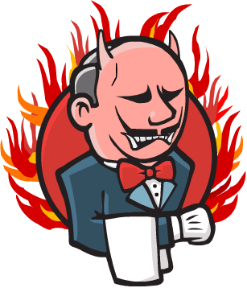

docker run
-d
-p 8080:8080
-v /home/jenkins:/var/jenkins_home
agileek/docker-jenkinsDocker Jenkins Slave
Cedric Gatayc.gatay@code-troopers.com
Jenkins

Serveur d’intégration continue
Permet de piloter des noeuds
- WMI + DCOM
- JNLP
- SSH
Pourquoi dans Docker?
Jenkins évolue vite (weekly, LTS tous les mois)
Mises à jour un peu pénibles
- wget du war
- cp / restart
L’occasion de jouer avec Docker de façon "utile".
Réinstallation nécessaire…
Notre ancien serveur était sur les genoux.
Projets internes avec des stacks différentes.
Pas envie de pourrir la config système comme sur l’ancien.
Quickstart
- Docker Hub
-
Images préconfigurées
- agileek/docker-jenkins
- evarga/jenkins-slave
agileek/docker-jenkins
Maintenue par mbitard
Fork de l’image officielle
Bleeding edge
evarga/jenkins-slave
Image avec OpenJDK7
Serveur SSH
Login jenkins/jenkins
Gentlemen start your engines

Configuration Jenkins
Plugin Docker
Configuration :
- nom d’image
- volumes montés
- label
Configuration Jenkins

Premier build

- pas de VCS dans l’image
- pas d’outils préinstallés
→ que pour un shell script
Personnalisation
- Détailler sa stack
- Chercher sur le registry
- Construire son Dockerfile
Aucard de Tours
Aucard de Tours - Web

- Git
- Java 8
- Maven
- Sass/compass
- npm
- Bower
- Grunt
Décomposer
Quelles étapes sont intéressantes ?
- Git X
- Git + Java 8 Y
- Git + Java 8 + Maven Y
- Git + java 8 + Maven + sass N
- Git + … + Grunt Y
Factoriser
Trois images résultats :
- jdk8
- jdk8-mvn
- jdk8-mvn-restx
Aucard de Tours - Android
SDK lourd à installer:
- API
- support repository
- compat repository
- images d’émulation
Aucard de Tours - Android
Images préparées :
- images pour le build
- images pour l’émulation (qemu x86)
Aucard de Tours - Android

Points de douleurs
Le plugin Docker Jenkins est pas complétement sec
- configuration lourdingue
- gestion des variables d’env difficile
- pas de feedback rapide lors du pull des images
Points de douleurs
Registry central :
- builds en erreurs
- recherche nulle
Points de douleurs
Construction des Dockerfile
- copier/coller
- trouver le bon "héritage"
D.R.Y.ness
Ajout de mixins:
- importer des fragments communs
- génerer un Dockerfile "composite"
- Cross platform (en Go comme Docker)
- Très simple (mix’n merge)
- Que pour des URLs (pour le moment)
Slides
Images
Accessibles sur
Debug slave en erreur
myhost $ docker ps
myhost $ ssh jenkins@localhost -p$PORT
jenkins@a233dfe $ # do what you want tonginx en frontal
nginx en proxy :
- sur le port 80
- router les requêtes par hostname
Avec Docker ?
Image nginx pour gérer les vhosts:
- jwilder/nginx-proxy
docker run -d -e VIRTUAL_HOST=jenkins.code-troopers.com -e VIRTUAL_PORT=8080 agileek/docker-jenkins
Bénéfices
- Serveur propre
- Builds reproductibles
- Montée en compétence Docker
Merci !
/